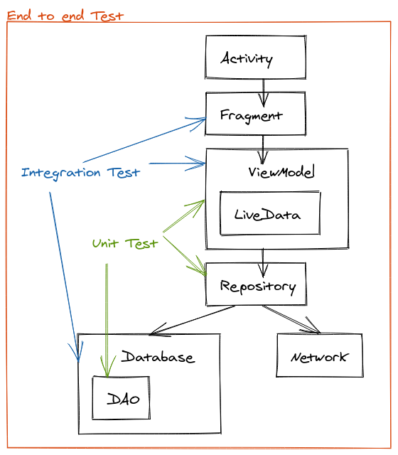
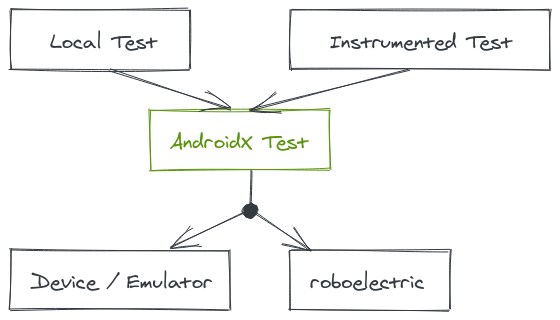

2021-03-04
An overview about Testing in Android. The following topics are covered.
When you create a new android project you get a default testing setup.
If you look at your project you will see three so called source sets.
androidTest and test contains your tests
$ tree -d -L 2 app/src/
app/src/
├── androidTest
│ └── java
├── main
│ ├── java
│ └── res
└── test
└── java
The default dependencies defined in gradle are junit and espresso library
You may noticed that the test folder represents the junit library. Where you test your code, classes in main folder.
For the android test dependency espresso library is used.
As a quick refresher. How to run a test in android studio: open your ExampleUnitTest class > mark the method annotated with @Test > right click > Run ...
The android test folder contains test which run on the android system. Not like the junit test which run on the local machine JVM (default java behaviour). The android test are also called instrumented test whereas junit test are called local test.
To run an android test works same way as junit. After running an android test you should see something like androidx.test.runner.AndroidJUnitRunner. Which is an indication of running an android test.
We have seen that android gives us the default (plus android test) environment to code in Test Driven Development methodology.
TDD: write test first, run test first and then implement the feature
The testing code is also a kind of a documentation what your code does.
subjectUnderTest_actionOrInput_resultState.
@Test
fun getDeveloper_expert_returnsExpert() {
// GIVEN
val devs = listOf<Developers>(Developer(experience=10), Developer(experience=15), Developer(experience=30))
// WHEN
val result = getNumberOfSeniorDevelopers(devs)
// THEN
assertEquals(3, result)
}
// `is` so called _matcher_
assertThat(result, `is`(3))
On automated testing generally three test scopes are used:
Btw. you will also find other testing pyramid specification. But this three layer definition should enough for most purposes.
Recommendation for coverage is:
But my thoughts are the main impact does the end to end tests.
A big issue is also if you have a large function or other components with lot of dependencies. It's difficult to test. In that case you can do an end to end test. But creating unit test could be in that case difficult.
That's why you should break down your application logic into isolated components. With a well defined (best practice) application architecture you can divide your code in a defined way.

What to do if you havent a well structured code or legacy code?
Run test in JVM instead of Android ecosystem.
We sad that unit testing (with JUnit) is a local test and faster then an instrumented test. In some cases we need an application context. In order to get that component Android provides AndroidX Test libraries.
testImplementation "androidx.test:core-ktx:$androidXTestCoreVersion"
testImplementation "org.robolectric:robolectric:$robolectricVersion"
testImplementation "androidx.test.ext:junit-ktx:$androidXTestExtKotlinRunnerVersion"
ViewModel which expects an application context.
@RunWith(AndroidJUnit4::class)
class DeveloperTest {
@Test
fun addNewDeveloper_setsNewDeveloperEvent {
val viewModel = DeveloperViewModel(ApplicationProvider.getApplicationContext())
}
}
With AndroidX Test libraries we can reuse code in both environments (local and instrumented). To conclude AndroidX Test provides a unified API.
